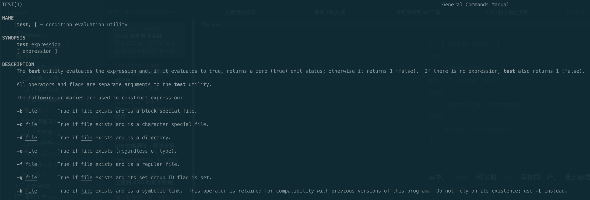

Shell 脚本最佳实践
工作五年来，为了不断提高效率给老板创造更多的价值，我对 Shell 脚本的使用越来越多。我一直主张一个很好理解的观点：电脑每秒可以计算上亿次，人工需要干一天的任务，Shell 脚本只需要 1 秒。这种效率的提升可以帮我们节省大量的时间。
本文会介绍常见的语法和用法，以及一些实用技巧。
Shell、Bash、ZSH 分别是什么
人和电脑交互，有两种方式，一种是通过软件程序，用鼠标一顿点击，这种属于 graphical user interface (GUI)，还有一种是通过命令行和电脑交互，比如使用电脑的 Terminal 程序执行命令，这种属于 command-line interface (CLI)。
Shell 提供了通过 CLI 和电脑交互的能力，编写的脚本称为 Shell 脚本。编写的脚本类似于 JS 一样需要解析器翻译成机器能理解的语言，这种解释器有多种，常见的有 bash zsh sh 等等。
当然，最常用的还是 bash，苹果电脑默认就用的 bash。本文默认也使用 bash。
更新升级 Bash
一般来讲苹果系统自带的 Bash 版本较低，如果想使用一些新的语法，比如 map，就需要用到更高版本。
系统默认的 bash 在 /bin/bash，不建议动这个。可以下载个新的，然后在脚本中手动指定使用新版本的 bash 即可。
# 安装最新版本的bash
brew install bash
# 安装完成后会告诉你新版本的路径，比如 /usr/local/Cellar/bash/5.2.2/bin/bash
# 需要把新版本的shell添加至信任列表中
sudo bash -c 'echo /usr/local/Cellar/bash/5.2.2/bin/bash >> /etc/shells'
然后在脚本中的第一行手动指定要使用的 bash 版本。
#!/usr/local/Cellar/bash/5.2.2/bin/bash
使用这种手动指定的路径要确认该脚本是否会在其他机器上执行，如果是的话，新机器的这个路径下大概率是没有新版本的 bash 的。
基本语法
前言：在 shell 脚本中，要养成良好的习惯，空格、对齐、都要按照格式来，不要轻易省略换行、空格等，一是可以保持代码整洁，二是避免产生语法错误。
if 条件
if 条件大致有几种，分别是 if、if else、if elif。
基本形式
一个基本的 if 条件类似于这样：
if [ <some test> ]
then
<commands>
elif [ <some test> ]
then
<different commands>
else
<other commands>
fi
其中，then 可以和 if 写在同一行，👇🏻 我比较喜欢这一种，因为少一行显得更简洁。
if [ <some test> ] ; then
<commands>
elif [ <some test> ] ; then
<different commands>
else
<other commands>
fi
判断条件
了解了格式之后，还剩一个重点就是 [] 之间的内容，也就是判断条件。
其实这个 [] 是调用了 test 指令。在命令行里输入 test 1 -eq 1 等同于 shell 里的 if [ 1 -eq 1 ] ; then。这么一来就简单了，我们只需要了解 test 的用法，就会各种 if 条件的判断了。
我们可以输入 man test 查看详细的用法。因为用法太多，这里不贴完了。

这里列举一下常用的判断条件。
| Operator | Description |
|---|---|
| ! EXPRESSION | The EXPRESSION is false. |
| -n STRING | The length of STRING is greater than zero. |
| -z STRING | The lengh of STRING is zero (ie it is empty). |
| STRING1 = STRING2 | STRING1 is equal to STRING2 |
| INTEGER1 -eq INTEGER2 | INTEGER1 is numerically equal to INTEGER2 |
| INTEGER1 -gt INTEGER2 | INTEGER1 is numerically greater than INTEGER2 |
| INTEGER1 -lt INTEGER2 | INTEGER1 is numerically less than INTEGER2 |
| -d FILE | FILE exists and is a directory. |
| -e FILE | FILE exists. |
| -r FILE | FILE exists and the read permission is granted. |
| -s FILE | FILE exists and it's size is greater than zero (ie. it is not empty). |
| -w FILE | FILE exists and the write permission is granted. |
| -x FILE | FILE exists and the execute permission is granted. |
举个例子，判断第一个参数 $1 是否大于 100：
if [ $1 -gt 100 ] ; then
echo Hey that\'s a large number.
pwd
fi
类似 C 语言的判断
上面的方式可以判断文件是否存在、字符串相等等复杂场景。如果是判断整数之间的关系，还有一种方式：可以把 [] 替换为 (())，然后 (()) 中间的语句可以用类似于 c 语言的语法判断整数之间的关系。
比如上面的例子可以用下面的方式改写：
if (( $1 > 100 )) ; then
echo Hey that\'s a large number.
pwd
fi
更复杂点，可以用模运算判断是否是偶数：👇🏻
if (( $1 % 2 == 0 )) ; then
echo And is also an even number.
fi
&& 和 ||
if 条件还有个知识点：&& 和 ||，也就是判断条件的并和或。这里直接上例子：
if [ -r $1 ] && [ -s $1 ] ; then
echo This file is useful.
fi
if [ $USER == 'bob' ] || [ $USER == 'andy' ] ; then
ls -alh
else
ls
fi
for 循环
基本形式
首先看一下基本语法。下面这个例子里是打印当前脚本的所有入参。$@ 可以获取所有入参组成的数组。
for i in $@
do
echo "Scrip arguments: $i"
done
和 for 循环类似，do 也可以和 for 写在同一行：
for i in $@ ; do
echo "Scrip arguments: $i"
done
接下来直接举几个常见的用法：
遍历 n 个指定的元素
for i in 1 3 10 2 100
do
echo "Welcome $i times"
done
$ ./test.sh
Welcome 1 times
Welcome 3 times
Welcome 10 times
Welcome 2 times
Welcome 100 times
遍历数字范围
for i in {1..5}
do
echo "Welcome $i times"
done
$ ./test.sh
Welcome 1 times
Welcome 2 times
Welcome 3 times
Welcome 4 times
Welcome 5 times
遍历数组
DEVICES=('iPhone' 'iWatch' 'iPad')
for device in "${DEVICES[@]}"
do
echo "Buy $device."
done
$ ./test.sh
Buy iPhone.
Buy iWatch.
Buy iPad.
遍历文件夹
for file in /etc/*
do
if [ "${file}" == "/etc/resolv.conf" ] ; then
break
fi
done
遍历字符串
PKGS="php7-openssl-7.3.19-r0 php7-common-7.3.19-r0 php7-fpm-7.3.19-r0 php7-opcache-7.3.19-r0 php7-7.3.19-r0"
for p in $PKGS
do
echo "Installing $p package"
done
$ ./test.sh
Installing php7-openssl-7.3.19-r0 package
Installing php7-common-7.3.19-r0 package
Installing php7-fpm-7.3.19-r0 package
Installing php7-opcache-7.3.19-r0 package
Installing php7-7.3.19-r0 package
类似 C 语言的循环
## The C-style Bash for loop ##
for (( initializer; condition; step ))
do
shell_COMMANDS
done
举个例子 👇🏻
# set counter 'c' to 1 and condition
# c is less than or equal to 5
for (( c=1; c<=5; c++ ))
do
echo "Welcome $c times"
done
$ ./test.sh
Welcome 1 times
Welcome 2 times
Welcome 3 times
Welcome 4 times
Welcome 5 times
switch-case
语法如下。如果 $var 匹配 pattern 1，则执行符号 ) 和 ;; 之间的语句。
其中，匹配条件（比如 pattern 1 ）支持通配符 *。
case <variable> in
<pattern 1>)
<commands>
;;
<pattern 2>)
<other commands>
;;
esac
举个例子：👇🏻
CARS="bmw"
case "$CARS" in
#case 1
"mercedes") echo "Headquarters - Affalterbach, Germany" ;;
#case 2
"audi") echo "Headquarters - Ingolstadt, Germany" ;;
#case 3
"bmw") echo "Headquarters - Chennai, Tamil Nadu, India" ;;
esac
执行一下：👇🏻
$ ./main.sh
Headquarters - Chennai, Tamil Nadu, India.
常见技巧
传参与解析
有时候需要传入一些参数，然后脚本根据不同的参数执行不同的逻辑。
获取函数或脚本的入参可以使用下面这些命令。
echo "Shell 传递参数实例！";
echo "第一个参数为：$1";
echo "参数个数为：$#";
echo "传递的参数作为一个字符串显示：$*";
# 依次打印所有入参 👇🏻
for i in "$@"; do
echo $i
done
上面几个命令只是作为个别简单场景使用。如果是获取脚本的入参，一般使用下面这种比较常规的方式。👇🏻
传参一般有两种方式：./test.sh --flag 1 或 ./test.sh --flag=1。区别是参数后面是跟着空格还是等于号。
其中 ./test.sh --flag 1 这种传参也可以灵活调整变化：
① 把 flag 缩写成 f：./test.sh --f 1
② 两个 -- 也可以缩短成一个 -：./test.sh -flag 1
③ 只传标记位不传具体值：./test.sh --flag
反正按自己需求灵活使用吧，下面给个模板：
#!/bin/bash
# 传参方式：./test.sh --flag 1 或者 ./test.sh --flag
set -e
while [[ $# -gt 0 ]]; do
case $1 in
-f|--flag)
EXTENSION="$2"
shift # past argument
shift # past value
;;
--default)
DEFAULT=YES
shift # past argument
;;
*)
echo "Unknown option $1"
exit 1
;;
esac
done
同样的，带等于号的传参模板也给一下。
for i in "$@"; do
case $i in
-f=*|--flag=*)
EXTENSION="${i#*=}"
shift # past argument=value
;;
--default)
DEFAULT=YES
shift # past argument with no value
;;
*)
echo "Unknown option $i"
exit 1
;;
esac
done
try-catch
Shell 没有支持类似于其他语言的 try-catch 能力。但是我们可以曲线救国。
{ # try
commands 1 &&
commands 2 &&
echo "exec successfully."
} || { # catch
echo "exec fail" &&
exit -1
}
利用 || 的特性，前半部分执行失败后才会执行后半部分，刚好达到 try-catch 的效果。
终止回调
有时候需要在脚本执行完毕后做一些清理操作，或者在脚本异常终止时做一些额外的逻辑，就需要监听脚本执行终止。
function exit_handler ()
{
CODE=$? # #? 是获取上一条指令的返回码，所以要在 exit_handler 的第一行获取一下存到变量里
SH_NAME=$(echo "$0" | grep -o '[^/]*$')
if [ $CODE == 0 ] ; then
echo "[info] $SH_NAME finish successfully"
else
>&2 echo "[error] $SH_NAME exit with err code $CODE"
fi
}
trap exit_handler EXIT
exit 255 # 错误码范围为 [0,255]
echo 彩色字体
在 Shell 脚本中，经常会通过 echo 命令打印日志，如果能改变日志的文字颜色还是挺好的，比如输出错误信息时将字体变成红色以增强提示，成功了就绿色喜庆一点。
这里给一个颜色的合集，可以随意选用。
#!/usr/local/Cellar/bash/5.2.2/bin/bash
declare -A colors
# Reset
colors[Color_Off]='\033[0m' # No Color
# Regular Colors
colors[Black]='\033[0;30m' # Black
colors[Red]='\033[0;31m' # Red
colors[Green]='\033[0;32m' # Green
colors[Yellow]='\033[0;33m' # Yellow
colors[Blue]='\033[0;34m' # Blue
colors[Purple]='\033[0;35m' # Purple
colors[Cyan]='\033[0;36m' # Cyan
colors[White]='\033[0;37m' # White
# Bold
colors[BBlack]='\033[1;30m' # Black
colors[BRed]='\033[1;31m' # Red
colors[BGreen]='\033[1;32m' # Green
colors[BYellow]='\033[1;33m' # Yellow
colors[BBlue]='\033[1;34m' # Blue
colors[BPurple]='\033[1;35m' # Purple
colors[BCyan]='\033[1;36m' # Cyan
colors[BWhite]='\033[1;37m' # White
# Underline
colors[UBlack]='\033[4;30m' # Black
colors[URed]='\033[4;31m' # Red
colors[UGreen]='\033[4;32m' # Green
colors[UYellow]='\033[4;33m' # Yellow
colors[UBlue]='\033[4;34m' # Blue
colors[UPurple]='\033[4;35m' # Purple
colors[UCyan]='\033[4;36m' # Cyan
colors[UWhite]='\033[4;37m' # White
# Background
colors[On_Black]='\033[40m' # Black
colors[On_Red]='\033[41m' # Red
colors[On_Green]='\033[42m' # Green
colors[On_Yellow]='\033[43m' # Yellow
colors[On_Blue]='\033[44m' # Blue
colors[On_Purple]='\033[45m' # Purple
colors[On_Cyan]='\033[46m' # Cyan
colors[On_White]='\033[47m' # White
# High Intensity
colors[IBlack]='\033[0;90m' # Black
colors[IRed]='\033[0;91m' # Red
colors[IGreen]='\033[0;92m' # Green
colors[IYellow]='\033[0;93m' # Yellow
colors[IBlue]='\033[0;94m' # Blue
colors[IPurple]='\033[0;95m' # Purple
colors[ICyan]='\033[0;96m' # Cyan
colors[IWhite]='\033[0;97m' # White
# Bold High Intensity
colors[BIBlack]='\033[1;90m' # Black
colors[BIRed]='\033[1;91m' # Red
colors[BIGreen]='\033[1;92m' # Green
colors[BIYellow]='\033[1;93m' # Yellow
colors[BIBlue]='\033[1;94m' # Blue
colors[BIPurple]='\033[1;95m' # Purple
colors[BICyan]='\033[1;96m' # Cyan
colors[BIWhite]='\033[1;97m' # White
# High Intensity backgrounds
colors[On_IBlack]='\033[0;100m' # Black
colors[On_IRed]='\033[0;101m' # Red
colors[On_IGreen]='\033[0;102m' # Green
colors[On_IYellow]='\033[0;103m' # Yellow
colors[On_IBlue]='\033[0;104m' # Blue
colors[On_IPurple]='\033[0;105m' # Purple
colors[On_ICyan]='\033[0;106m' # Cyan
colors[On_IWhite]='\033[0;107m' # White
white=${colors[White]}
for key in ${!colors[*]}
do
echo -e "$key = ${colors[$key]} I love you $white"
done
转载请注明出处：Shell 脚本最佳实践 - 专业点
欢迎关注我的公众号

推荐

公众号推荐
欢迎关注我的公众号一起愉快的交流。